大家可能知道，我是 AI 搜索的第一批从业者。最早的时候，ChatGPT 里的内置搜索插件是我写的（如果你是 ChatGPT 的第一批付费会员，大概率会用过我写的代码）
前两天周末，DeepSeek 发布了 AI 搜索的方案；恰逢其时，昨天元宝也给出了自己的搜索方案，开放了 API。两家前后脚，这也算是行业共识的一个小趋势吧
同时的，还有一场元宝那边的行业交流会，正好来说道说道这玩意儿大概是怎么实现的。AI 搜索这东西原理并不复杂，但也为了让搜索有更好的适用性，会加很多工程上的狠活
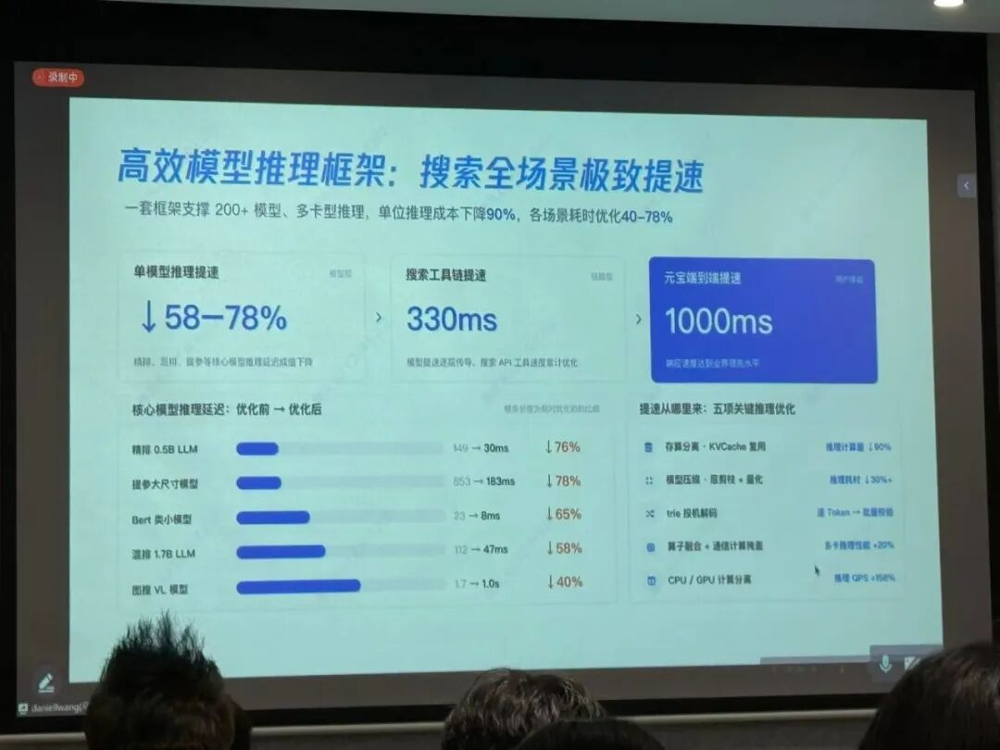
AI 是怎么“搜”的
如果你问 AI：“北京明天天气怎么样，出门要带伞吗？”，它通常会给你这样一句话：
明天（周三）晴，3～14℃，不用带伞。出处：北京日报
没毛病，对吧？
但大模型本身是没法知道明天天气的：他只能够通过上文来推导下文。在这个过程中，他默认是不知道今天是几号的，也查不到天气的信息
那它是怎么答上来的？模型和搜索之间来回走了一趟，然后完成信息的额外注入：
具体来说，在模型拿到问题后，会发现光靠自己答不了，于是先写出一段格式固定的请求，说清楚要搜什么、要几条：
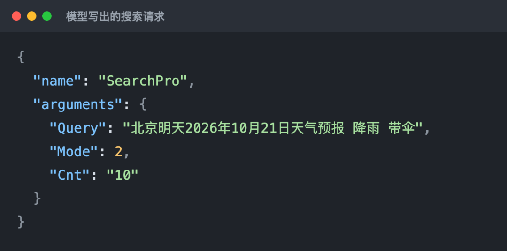
这段请求会被外面的程序认出来。程序拿着里面的检索词去搜，再把搜到的十条结果原样贴回模型的上下文里：
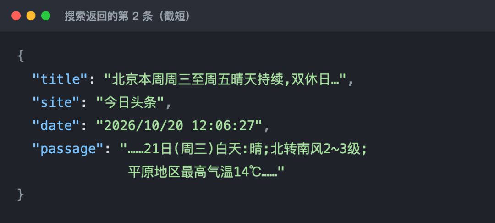
模型读完这十条，接着往下写，有了开头那句带出处的回答
你会发现，这一趟里模型只做了两件事：决定搜什么，决定怎么用搜回来的东西
于是，这里面就藏了一个坑：搜出来的结果是搜索引擎说了算，而模型也分不清哪篇文章是真的，比如塞进去的可能是营销号的内容，也可能是过时的信息
这时候就需要进行工程狠活了（后面聊）
搜索开始给 Agent 用
搜索这个行当，过去这些年经历了几轮演变
最开始，搜索是给人用的，比如谷歌、百度这些：你敲几个关键词，它给你十条链接，你自己爱点哪里点哪里
后来有了 ChatGPT，模型能读懂网页了，搜索结果就先交给模型，由它替你写成一段总结
到了这两年 Agent 起来，读结果的又换成了 Agent：它把一个任务拆成好几个子问题，一轮一轮地搜，读完这一轮，再决定下一轮搜什么
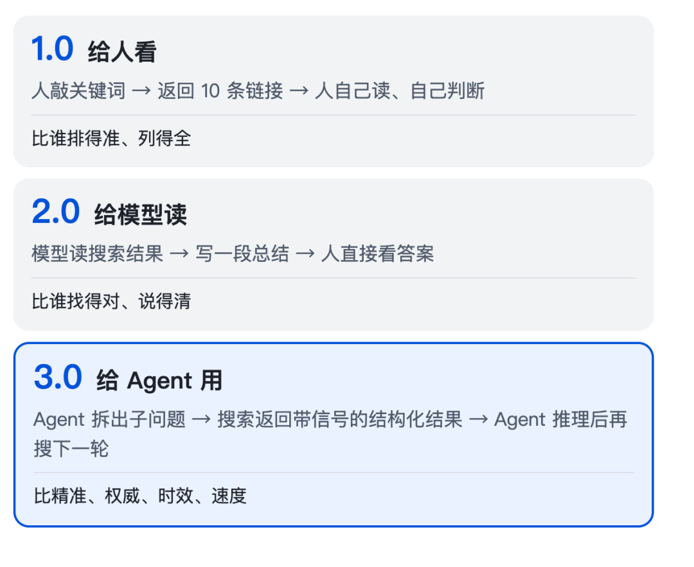
读结果的从人换成了 Agent，搜索面对的情况整个变了：
检索词由 Agent 拆出来，搜索得听懂 Agent
读结果的模型不辨真假，真假只能由搜索来把关
模型的知识停在训练结束那天，新东西靠搜索补
Agent 一个任务要搜好几轮，每一轮都得快
放回一次搜索的流程里看，这四件事各自卡在不同的环节：
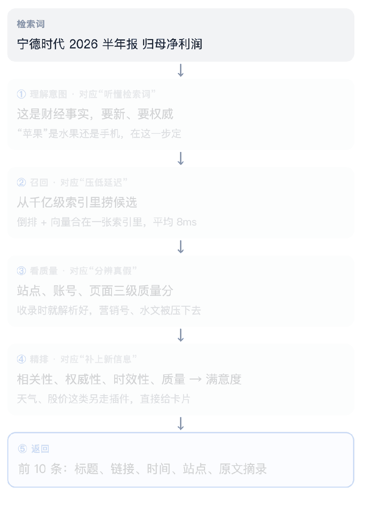
一、听懂检索词
检索词这件事，先有个老问题：用户问“苹果”，是水果还是手机？问“北京的机场”，是大兴还是首都？意图理解错了，后面排得再好也没用
到了 Agent 时代，难在检索词是 Agent 写的。Agent 拆问题的习惯和人不一样，搜索得反过来去适应它
元宝搜索的做法，是让搜索和 Agent 互相喂信号：
搜索往 Agent 那边送：每条结果的权威等级、发布时间、排序满意度，帮 Agent 挑该引用哪条
Agent 往搜索这边送：最后引用了哪几条、思考过程、答案的打分（answer reward），搜索拿去改排序
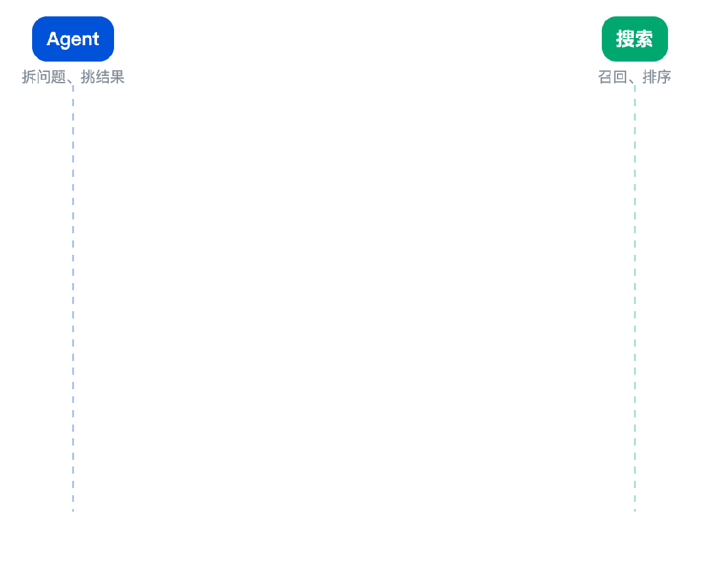
至于喂得好不好，看 Agent 要搜几次就知道。WorkBuddy 做过联合评测：接入升级后的元宝搜索，一个任务平均调用搜索的次数，从 8 次降到 5 次左右
活动上有个做内容产品的开发者也说：以前问一个问题，Agent 要翻 20 个网页，现在 5 个就够
这些信号最后喂给的，是排序模型。元宝搜索的排序模型，也是用大模型训出来的：
Label 模型先给海量的检索词和网页标注，产出监督信号
用这些信号训一个大尺寸的 Teacher 模型，学会复杂的排序偏好
再蒸馏成小尺寸的 Student 模型上线，保证速度
训练样本从线上来：系统把结果不满意的检索词挖出来，交给智能体标注，再增量训练。以前靠人工标注、手工调参，按月迭代；现在能按天
二、分辨真假
真假的问题，开头说过：模型不辨真假，营销号、AI 批量写的水文，进了上下文它都会用
所以，一个网页靠不靠谱，最好在收录的那一刻就判断好。元宝搜索给每个网页打三级质量分：站点、账号、页面。收录时用大模型把网页解析一遍：作者是谁，这个作者历史上发过什么，内容有没有出处
对付 AIGC 水文和 GEO（专门写给 AI 引用的内容）是一场攻防：单篇内容用专门的识别模型打，频繁发 AIGC 内容的账号和网站，按发布规律专项识别
但更管用的，是反过来把优质信源找出来、排上去。“优质”要看问的是什么：
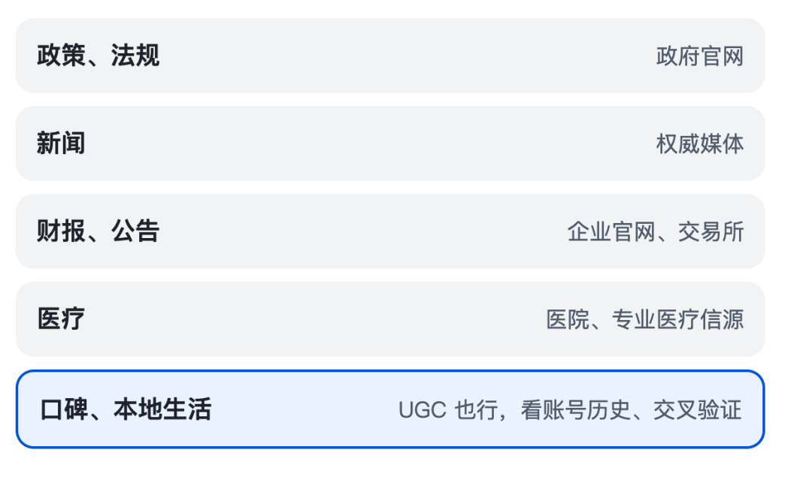
也有些内容是搜不到的：设了反爬的网站，出于尊重版权不收录；像携程这种打不开的，走三方合作拿内容
三、补上新信息
时间的问题，出在模型身上：它的知识停在训练结束那天，互联网的内容却按秒在变。财报、赛程这类信息，晚一个小时可能就错了
网页这边，时效性高的站点刷新得更勤，财经、股票类大约一小时一次
但股价、天气、航班这种东西，变得比网页还快，等网页写出来就过时了。所以元宝搜索单独做了一套插件系统，类似谷歌的 OneBox、百度的“阿拉丁”，接了 13 个垂直行业的 157 个头部信源，比如腾讯自选股、飞常准、携程、京东：
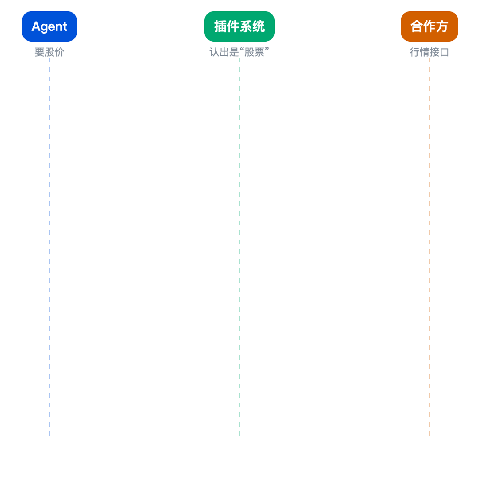
插件直接调合作方的接口，拿到数据后封装成卡片，跟网页结果一起返回。我问“腾讯控股今天股价”时拿到的卡片，原样是这样的：
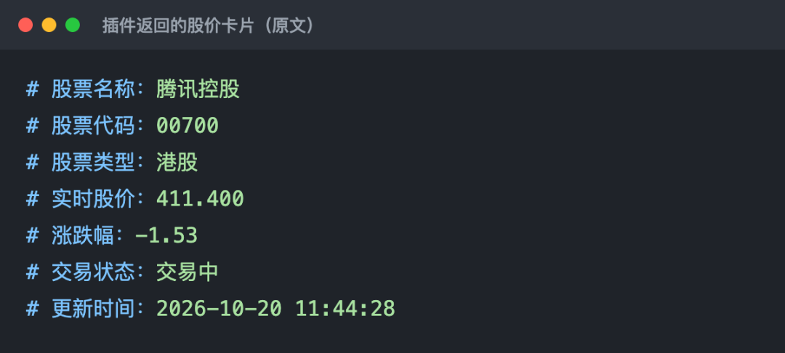
字段名是中文，带着更新时间，模型拿到能直接用
对接入方来说，航班、行情、商品这些数据，不用再一家家去谈授权
四、压低延迟
延迟的压力来自 Agent：一个任务要搜好几轮，每一轮慢一秒，用户就等不下去了。元宝搜索最快的版本，单次 300ms 以内返回（升级前要 400 到 500ms），连搜三轮，加起来还不到一秒
索引。最先花时间的，是从海量网页里把候选捞出来。元宝搜索把按词查的倒排索引和按意思查的向量索引，合进同一张千亿规模的索引里，召回率 94% 以上，平均检索耗时 8ms
排序。捞出来之后还要排，这一步更贵：精排要跑模型，网页全文动辄几千个 token，每次查询都算一遍，又慢又贵。元宝搜索的解法，叫 Gist Token：
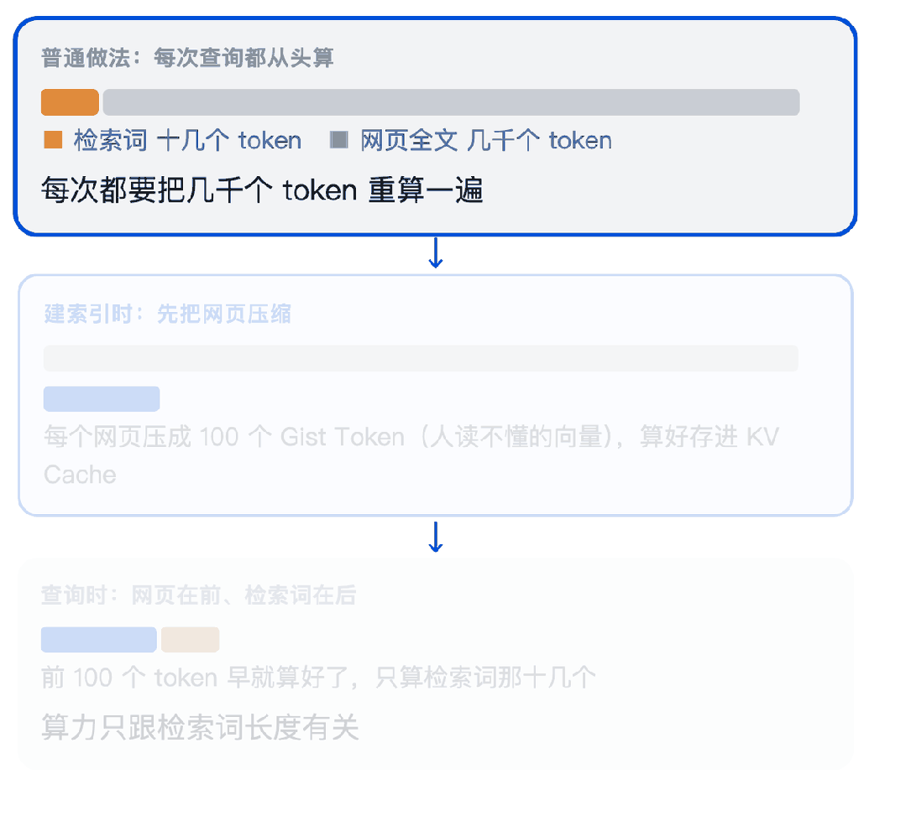
建索引的时候，先把每个网页压成 100 个 Gist Token，这是人读不懂的向量，算好存进 KV Cache（模型算过的中间结果，存下来不用重算）
查询的时候，把这 100 个 token 放在前面、检索词放在后面，前面那段已经算好，只需算检索词那十几个 token
这样，排序的计算量只跟检索词长度有关
缓存存不下所有网页，只存热门的，所以命中率越高越省。这一项能省下 30% 左右的在线推理成本
推理。排序模型本身跑得多快，也决定了整体快慢。元宝搜索的推理框架做到能跑在多种卡型上，不挑卡，单位推理成本降了 90%
搜索变成 API
搜索做好了，还得交到 Agent 手里。对外，它是一个接口
这里用元宝搜索作为例子，你可以在腾讯云上面获取 API，然后也可以选版本和计费方式。标准版按量后付费，20 元/千次，一次两分钱；也可以买资源包。我开的是标准版、后付费：
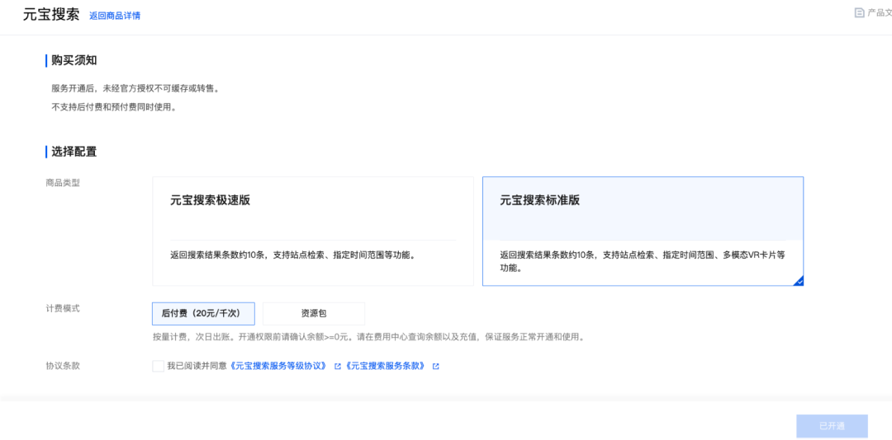
免费额度是每月 2000 次。10 月 10 日到 11 月 30 日，如果有激活码的话，能提到每月 6000 次（我去要一下，之后发到评论区）：
然后到「概览 → 服务 API KEY 方式」，点「创建 API KEY」，起个名字，拿到一串 sk- 开头的 Key：
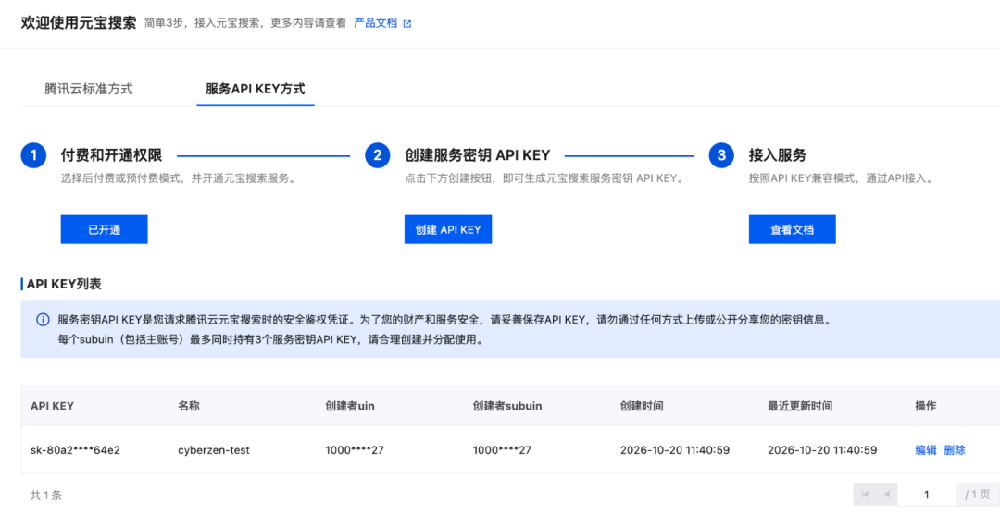
有了 Key，调用就是一个 HTTPS POST，Header 里带 Key，Body 里放检索词：
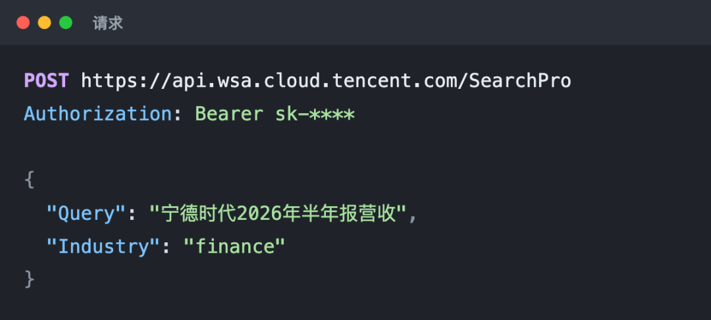
返回的，是开头那一来一回里贴回给模型的结果：
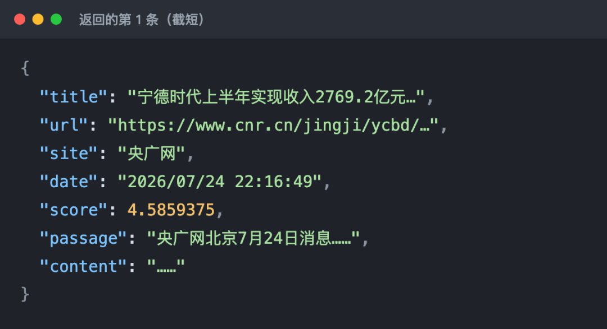
注意，它只返回条目。passage 和 content 都是原文摘录，最长分别约 800 字和 2500 字。答案由拿到这些条目的模型自己写
每次要几条、在哪搜，可以自己定：最多 50 条，用 Cnt 参数控制；还能限定站点、时间范围、垂直领域（财经、新闻、党政、学术），或者只要插件卡片
这几个参数，加上动态摘要和插件卡片，要从标准版起步；极速版只给基础的十条结果。旗舰版还会给每条结果附一个 0 到 5 的权威度评分
再包成 MCP
接口有了，模型还得知道“有这么个工具，参数怎么填”
这件事三年里换过三种写法：2023 年 ChatGPT 的 Plugin，要写一个 yaml 文件，描述在什么情况下调用、发出什么样的请求；后来是 Function Calling；现在是 MCP。写法不同，本质是一份写给模型看的说明书
MCP 是现在比较通用的，你可以在腾讯云的 MCP 广场上获取现成的服务，页面上给了配置样例，把刚才那个 Key 填进去就行：
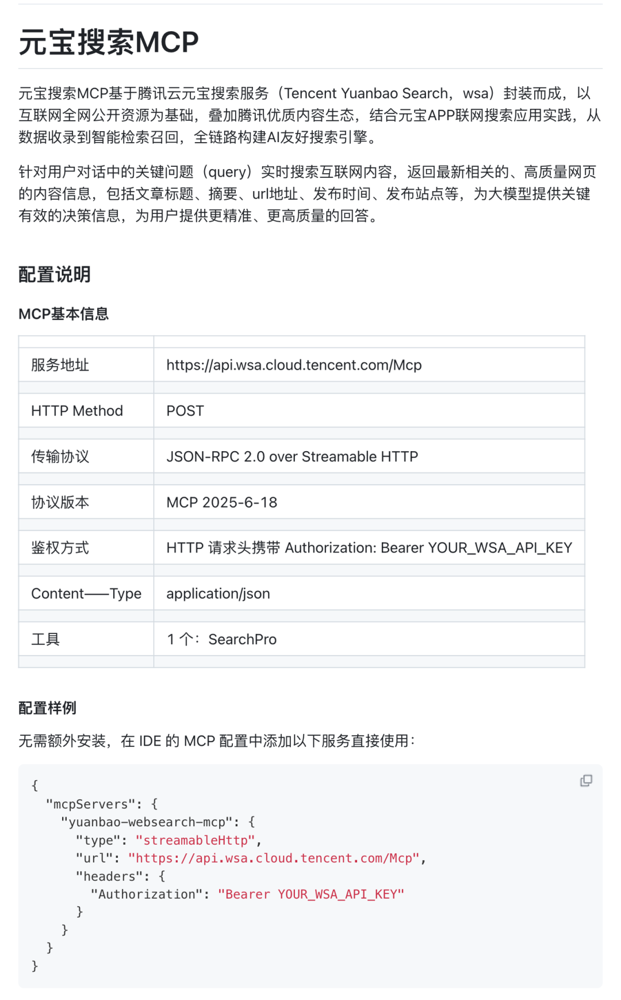
换成 Codex 的写法，是这三行：
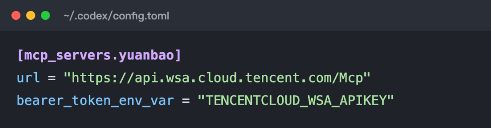
如果用的 Agent 支持 Skill，还有更省事的接法：腾讯的 SkillHub 上，有元宝搜索官方发布的 Skill，把页面上那句安装提示词发给自己的 AI，它会自己装好：
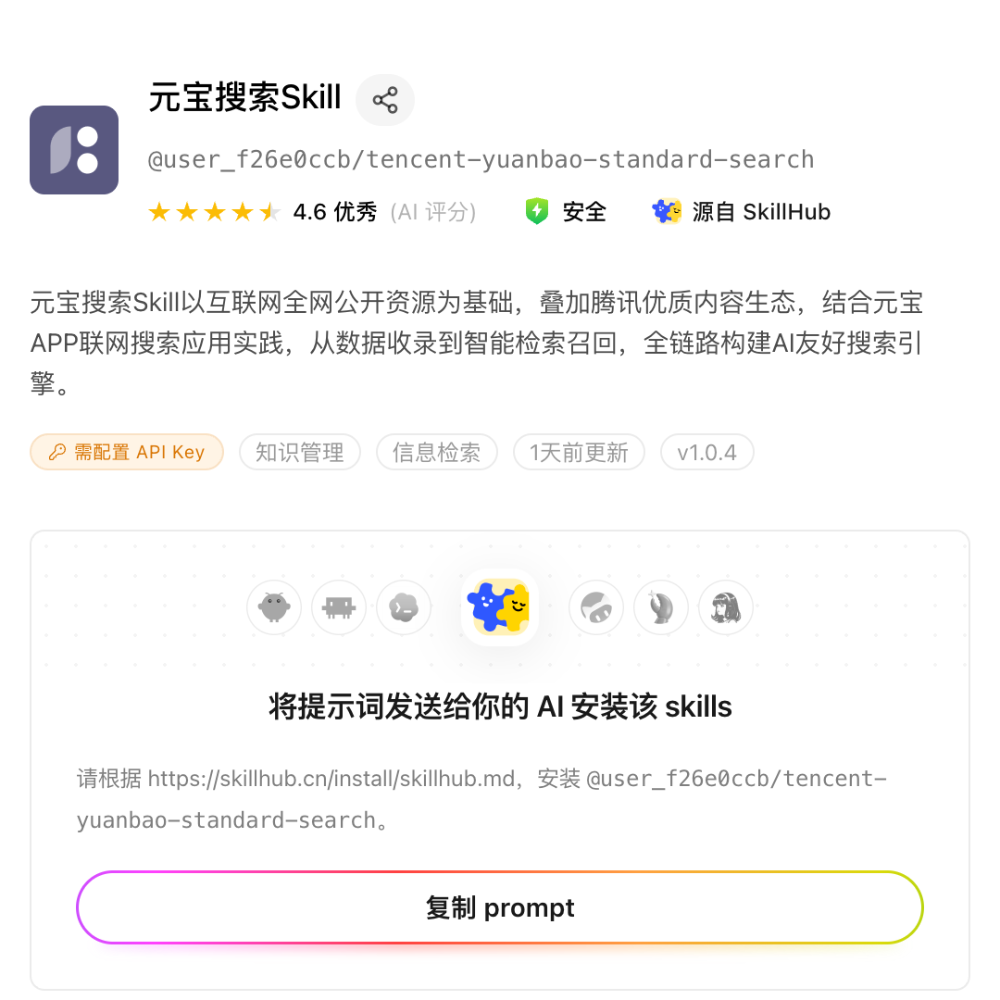
API、MCP、Skill 三种接法，在底层信源上并无差异，至少封装方法不同
回到 MCP。配好之后，Codex 和搜索服务之间，是这样一步步对上话的：
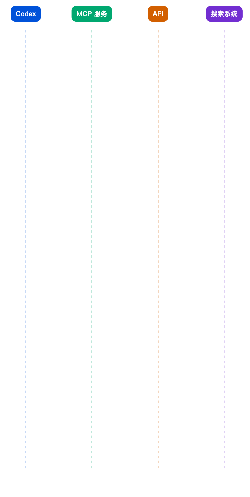
第一步 initialize，问对方是谁：
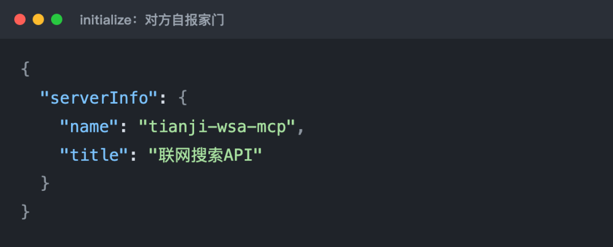
emmm...改名之前，它就叫“联网搜索 API”
第二步 tools/list，问对方有什么工具，拿到的是那份说明书：
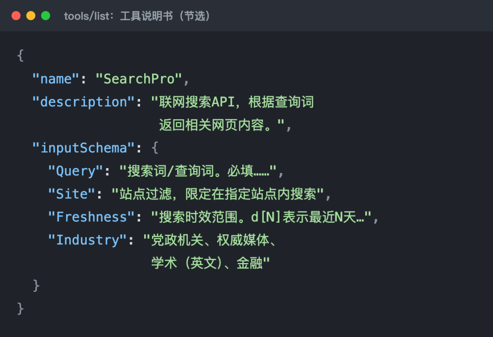
模型靠它判断什么时候该搜、参数怎么填
第三步 tools/call，模型真要搜的时候发出去。MCP 服务把参数转给上面那个 API，再把 API 返回的 JSON 原样装进一段文本还回来
所以 MCP 版和 API 版拿到的是同一份结果，MCP 只多了一份写给模型的说明书
说明书写清楚了，搜几次、怎么搜，就交给了模型自己。而最终质量的好坏，也受到模型规划的影响，典型的是多跳问题
所谓多跳，是答案要拐好几道弯：先查出 A，才知道该去查 B；查到 B，才知道下一步查什么。比如我问 Codex 的这个：
2026 年诺贝尔物理学奖得主里，最年轻的那位现在在哪所大学任职？这所大学的现任校长是谁？
用户这一侧，看到的是这样：
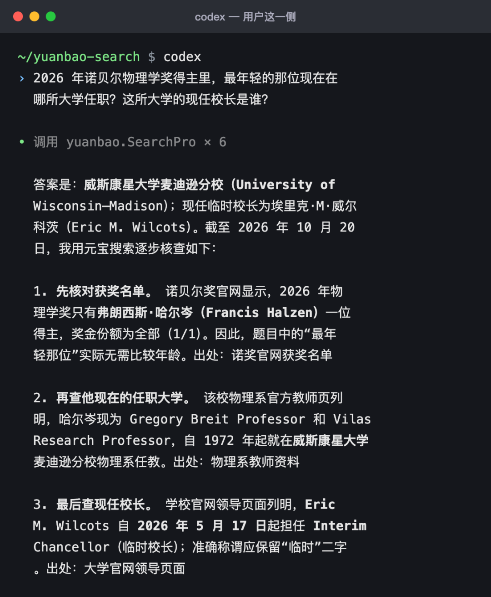
接口这一侧，Codex 前后发了 6 次 tools/call：
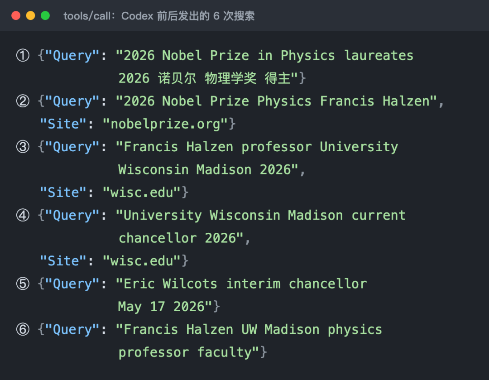
第二次，它把范围限定在诺奖官网，发现今年只有弗朗西斯·哈尔岑一位得主，“最年轻的那位”不用比。第三次限定威斯康星大学官网，确认他在麦迪逊分校。第四、五次查到现任的是临时校长埃里克·威尔科茨，2026 年 5 月 17 日上任
去掉核对用的几次，主干是三跳，每一跳都是开头那一来一回：
同样一句话原样丢给 API 搜一次，返回的是 10 条“哈尔岑获奖”的新闻，大学和校长一条都没有
这里体现了工具与调用的分工：搜索是原子化的能力，一次请求只搜一件事；多跳规划，则是由 Agent 解决
原因也简单：第二跳该搜什么，要等第一跳的结果读完才知道。读结果、做判断的是 Agent，下一跳只能由它来定；搜索要做的，是把每一跳都搜准、搜快
前面那四件事，说的都是“单次”：检索词听得懂，结果分得清真假，信息够新，几百毫秒内返回。单次做扎实了，Agent 才敢连着搜五六轮
另外，这类接口只给摘录、不给整页，想读全文，还得 Agent 自己去抓
最后
开头那句“明天晴，不用带伞”，用户看到的只是一句话。背后是模型写了一次请求、读了十条结果，而搜索要在几百毫秒里，从千亿级的网页里挑出这十条
换成 Agent 来做任务，这一来一回会重复好几轮
所以给 Agent 挑搜索，可以照着前面那四件事看：
财报、政策、医疗这类问题，返回的是不是官方和权威来源
股价、天气这类实时数据，有没有结构化的卡片
单次能不能压到几百毫秒，Agent 连搜几轮也不卡
能不能限定站点、时间和领域，让 Agent 自己收窄范围
还有就是，由还记得 AI 搜索最早的价格普遍都很贵，比如 23 年底底时候，行业价格普遍在 15～25 美金/千次（非 AI 搜索在 5美金/千次）
而现在，随着行业的发展，价格也有了很大的折扣降低，到了个人也能负担的程度，以本文提到的元宝为例，每个账号每月有 2000 次免费额度，超出部分，标准版按 20 元/千次计费，量大还有额外折扣（懂得都懂），科技普惠了算是